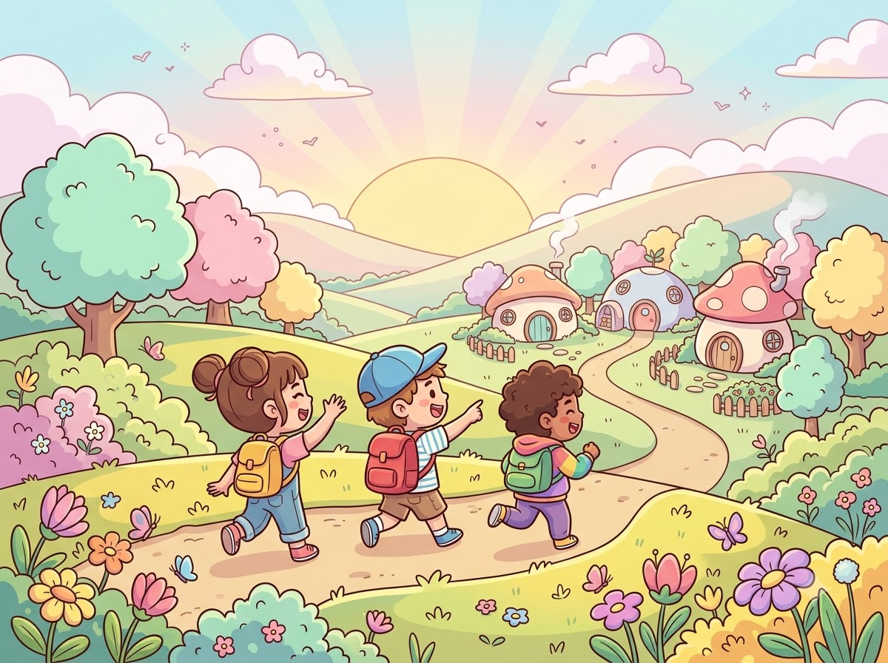
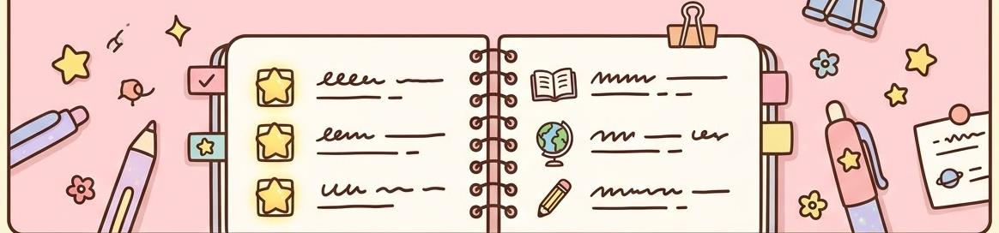
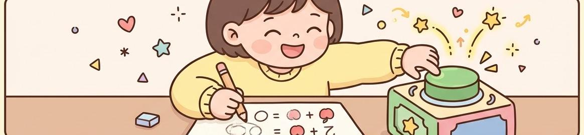

끝내면 다음 갈래를 추천합니다
- 첫 시도 결과를 기준으로 보충 또는 심화 중 하나를 권하는 흐름입니다.
- 자주 막히는 유형은 같은 단원의 보충을 먼저 권합니다.
- 여러 번 막힌 문제는 오답 교실로 이어지는 구조입니다.
초등 1~6학년 2학기 · 마을형 수학 소개 데모
이 페이지는 특정 홍보 사이트의 구성을 참고한 학습용 클론입니다. 화면 흐름과 기능 배치만참고하고, 이름·문구·그림·마을 지명은 모두 새로 썼습니다. 실제 게임 서버에는 연결되지 않습니다.

위 그림은 생성 이미지로, 원본 사진·썸네일은 사용하지 않았습니다.
학년 고르기
선생님이 학년 카드를 골라 링크를 복사하면, 학생은 그 주소로 바로 입장하는 흐름입니다. 가입·설치 과정은 데모에 포함하지 않았습니다.
그림이 크고 조작이 단순한입구입니다.
마을을 돌며 단원 건물과 놀이를 오가는입구입니다.
문항 수·용량 수치는 원본의 사실 표기를 그대로 옮기지 않았습니다. 이 데모의 수치는 예시이며 실제 분량과 다릅니다.
1·2학년 흐름
낮은 학년은 같은 지도라도 문제 제시 방식을 다르게 풀어낸 흐름으로 정리했습니다. 큰 숫자 단추와 그림 카드 선택이 중심입니다.
마을 둘러보기
집 꾸미기·농사·산책 같은 일상은 전 학년이 공유하고, 단원 건물 안 질문만 학년에 맞춰 바뀌는 구조를 소개합니다.
학습 흐름 · 전 학년
이동 시간을 줄이기 위해 단원 건물에 들어서면 차시 목록이 먼저 나오는 흐름으로 정리했습니다.

차시 목록오늘 분량 · 보충 · 심화 표시
문제 화면메모장 · 입력 칸 · 기회 표시메모는 채점하지 않고 문제마다 따로 보관한다는 전제로 설명합니다.
순환 구조 · 전 학년
마을 놀이 · 전 학년
놀이마다 숨어 있는 수학이 다르고, 열리는 학년도 다릅니다. 이름과 규칙은 이 데모용으로 새로 지었습니다.
선생님께
데모의 기록은 이 브라우저에만 저장됩니다. 기기를 바꾸면 이어지지 않습니다.
문제·정답·해설의 검토 흐름을 소개하는 자리입니다. 데모에는 실제 문항을 넣지 않았습니다.
채점·보상·저장 같은 기본 동작은 빌드마다 점검한다는 전제를 적었습니다.
설치 없이 주소 하나로 여는 구조를 설명합니다. 태블릿·PC 브라우저를 가정합니다.
1~6학년 2학기
학급에서 바로 쓰는 서비스가 아니라, 홍보 흐름을 연습하는 클론입니다. 의견을 남겨 주시면 다음 버전에 반영하겠습니다.
좋았던 점·불편한 점·바라는 기능을 아래 데모 폼에 적어 주세요. 개인정보는 적지 말아 주세요. 원본의 패들렛·메일 주소는 이 클론에 옮기지 않았습니다.
이 데모에는 실제 문의처를 두지 않았습니다. 아래 단추는 데모용 복사 동작만 보여 줍니다.